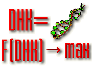
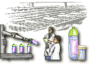
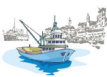

Сборочный робот имеет дело с "миром кубиков", который состоит из небольшого числа простых кубиков (параллелепипеды, уголки, кубы). Его задача: переложить кубики из некоторого заданного начального положения в некоторое заданное конечное. Это типовая задача, рассматриваемая в искусственном интеллекте. Робот должен выполнить логический вывод - построить дерево решений, опираясь на имеющиеся у него знания. При этом обычно требуется найти не любое, а оптимальное решение.
Представленная модель включает модель самого робота и модель системы управления, осуществляющей логический вывод.

Автомат представляет собой устройство, которое может находиться в нескольких (конечных) устойчивых состояниях. Взаимодействуя с внешней средой автомат выдает во внешнюю среду сигнал действия, предписанного каждому его состоянию. Смена состояний происходит с учетом оценки за предпринятое действие, получаемой от внешней среды. Эта оценка двоичная - штраф или поощрение.
Цель функционирования автомата - приспособление к условиям внешней среды, то есть минимизация штрафов. Автомат не смотря на его простоту демонстрирует целесообразное поведение.
Имитация позволяет оценить значения параметров автомата (глубину памяти, соответствующую длине лепестка на схеме автомата), обеспечивающие ему наилучшее поведение, а также провести исследования о поведении автомата в постоянно изменяющейся внешней среде.

Многие сложные системы представляют собой системы массового обслуживания. Для подобных систем характерны случайный входной поток клиентов, наличие приборов обслуживания, случайное время обслуживания и очереди, возникающие при ожидании клиентами обслуживания. Одним из примеров таких систем служит парикмахерская.
Задача: требуется определить рациональное число парикмахеров и характеристики очереди, такие как среднее время ожидания, максимальная длина и другие.
Моделирование обеспечивает решение задачи с учетом всех случайных факторов и позволяет правильно организовать процесс обслуживания клиентов, выбрав рациональное число парикмахеров и требуемое количество кресел для клиентов, ожидающих обслуживания.

Управление автомобилем, как известно сложная и тяжелая работа. Водитель должен быстро принимать множество решений в подчас чрезвычайно сложной и быстро меняющейся обстановке. Правильные решения может принять лишь водитель, обладающий большим опытом, знаниями и автоматизмом поведения в сложных ситуациях. Помочь принять решения водителю может экспертная система, содержащая знания специалистов и всегда готовая подсказать решение водителю, там, где его опыта не хватает.
Задача: определить состав и объем знаний для принятия решений, выбрать способы их приобретения, хранения и использования. С помощью РДО-имитатора разработана сложная система, включающая имитационные модели дороги, движения автомобиля и экспертную систему для принятия решений. В экспертную систему были заложены знания опытного водителя. Результаты показали принципиальную возможность реализации подобных систем.

Моделируется работа системы автоматической идентификации кредитной карточки при совершении покупки. Система требуется для обработки покупок в универмаге. Продавец вводит необходимую информацию о покупке с клавиатуры кассового аппарата.
Жесткая магнитная карта считывается автоматом. На кредитной карте записано имя покупателя и другая информация. Эта информация передается в файл покупателя. Если покупательная способность подтверждена, генерируются копии аккаунтов и обновляются идентификационный файл клиента и информация на карте.
Терминал системы сохраняет информацию обо всех операциях, совершенных в течение текущего дня. Часть информации о текущей операции периодически передается в файл, содержащий инвентарный список товаров и в файл, содержащий информацию о продавцах.

Распределённая база данных (РБД) представляет собой базу данных, отдельные части которой размещены на нескольких ЭВМ локальной вычислительной сети. Система управления РБД обеспечивает определение ЭВМ, на которой хранятся требуемые в запросе данные; декомпозицию распределённых запросов на подзапросы; планирование обработки запросов; передачу частных подзапросов и их исполнение на удалённых ЭВМ и многое другое.
Задача: сократить время обработки сложных распределённых запросов, выполняющих ряд операций над данными на различных ЭВМ сети, за счет эффективного размещения файлов и эффективного распределения этапов процесса обработки данных между ЭВМ сети.
Имитируется появление сложных запросов, планируется процесс обработки запросов, их декомпозиция на подзапросы, передача данных по сети, обработка на ЭВМ, поиск и чтение данных из РБД, композиция общего результата, обеспечение целостности РБД, выявление ситуаций Death-Lock, определение основных характеристик системы.

Гибкий автоматизированный участок предназначен для изготовления деталей сверхпроводящих магнитов. Участок включает более 70 единиц различного оборудования, в том числе прессы листовой штамповки, склады, моечные и галтовочную машины, позиции сборки, монорельсовые дороги.
Задача: оценить технический проект участка, определив пропускную способность, узкие места, интенсивность транспортных потоков и другие характеристики.
Применение РДО-имитатора позволило вскрыть ряд недостатков в разработанном проекте, и выработать конкретные рекомендации по изменению проекта.

Важнейшее требование к производству мебели - быстрое выполнение индивидуальных заказов на мебель. Производство мебели из массового все более становится индивидуальным. Заказы отличаются не только составом, но и цветом отделки. Рассматриваемая линия изготовляет комплекты деталей под имеющийся портфель заказов.
Задача: обеспечить своевременное и быстрое изготовление отдельных заказов, уменьшить переналадки оборудования. Для этой цели необходимо эффективное планирование работы участка и управление оборудованием.
Имитационная модель позволила исследовать различные алгоритмы планирования и управления выпуском деталей, обеспечить комплектацию заказов на выходе линии. Кроме того получены оценки максимальной производительности линии и загрузки отдельных ее элементов.

Эволюционно-генетический подход позволяет создавать алгоритмы поиска оптимальных решений, на основе моделирования биологических механизмов популяционной генетики. Он позволяет решать оптимизационные задачи, не прибегая к направленному перебору.
Представленная модель имитирует развитие популяции за счет воспроизведения особей из поколения в поколение, их скрещивания и мутации. Особи в популяции оцениваются некоторой функцией качества, определяющей их способность к выживанию в процессе эволюции. Лучшие особи имеют преимущество в процессе воспроизводства потомков. При этом потомки наследуют положительные качества своих родителей.
При анимации эволюционного процесса на экране ЭВМ, повышению качества популяции соответствует перемещение особей в область, близкую к оптимуму (на кадре - это правый верхний угол).

Для минимизации отходов древесины при разделке хлыстов на балки и брусья необходимо разработать алгоритм раскроя бревна. Этот алгоритм по результатам обмера очередного бревна и по имеющемуся портфелю заказов на пиломатериал определяет длины пилоблоков и вписывание пиломатериала в пилоблок.
Так как при раскрое необходимо учитывать плановые сроки изготовления заказов и запаздывание самой программы раскроя, свойства алгоритма раскроя не могут быть определены без имитации процесса функционирования участка распилки.
Разработанная модель и различные варианты алгоритмов раскроя (эвристические, генетические, поиска решений в продукционной системе) позволили предложить алгоритм раскроя бревен.

Локальные вычислительные сети (ЛВС) представляют собой системы распределенной обработки данных, охватывающие небольшие территории внутри отдельных офисов, предприятий, банков, больниц и т.п.
Моделируется процесс обмена информацией между ЭВМ ЛВС по каналу связи, имеющему топологию кольца. ЛВС использует передачу маркера и протоколы низкого уровня стандарта IEEE 802.5 (Token Ring) института инженеров электроники и электротехники США.
Задача: Оценить характеристики ЛВС, такие как производительность, наличие тупиковых ситуаций, загрузка канала и другие.
Моделируется функциональная структура ЛВС, представленная в виде IDEF0 - диаграмм.

Система наблюдения за пациентом установлена в блоке интенсивного ухода. Наблюдение осуществляется с помощью устройств, которые измеряют ритм сердца, артериальное давление, температуру и сопротивление кожи. Информация собирается периодически и заносится в базу данных. Для любого пациента по каждому параметру специфицируется зона безопасности как допустимый диапазон параметра. Если параметр выходит за допустимый диапазон, то об этом информируется пост медсестры.
Задача: определить характеристики системы наблюдения такие как загрузка компьютера, по обработке данных, загрузка канала передачи.
Структура функций системы наблюдения за пациентом была описана в виде IDEF0-диаграмм. Имитационная модель генерировалась на основе функциональной структуры системы.

Сети Петри широко используются для описания и моделирования дискретных параллельных, асинхронных, иерархических систем и процессов достаточно простыми средствами. Математическая модель описываемых сетью Петри системы или процесса достаточно наглядна и легко алгоритмизируема для моделирования на ЭВМ.
Представлена модель временной сети Петри, описывающей функционирование гибкой производственной ячейки, состоящей из двух станков, одного робота и накопителей. Функционирование ячейки моделируется изменениями в маркировке сети Петри.
Задача: Определить характеристики работы оборудования ячейки в процессе обработки заданного числа деталей.
Имитация функционирования гибкой производственной ячейки описывается последовательной сменой маркировок сети. Маркировка изменяется из некоторой заданной начальной в конечную.

Линия разлива пищевых жидкостей в бутылки состоит из рабочих станций, производящих или контролирующих продукты (мойка, наполнение, упаковка), связанных между собой многоленточными аккумулирующими конвейерами. Основная цель управления - это балансировка производственных потоков и емкости буферных накопителей. Система управления линией должна воспринимать и обрабатывать информацию о текущем состоянии машин, датчиков и конвейеров и в зависимости от ситуации менять скорость машин и конвейеров.
Задача: разработать алгоритмы управления линией разлива, обеспечивающие максимальную производительность.
Разработанная модель позволила испытать различные алгоритмы управления линией разлива фирмы Перье (Франция) и оценить альтернативные способы размещения датчиков, контролирующих поток бутылок на линии.

Моделируется морской нефтеналивной порт, который обслуживает танкеры трех типов. Танкеры каждого типа прибывают в порт по случайным законам, различным для каждого типа. Танкеры прибывают на рейд, затем в порядке приоритетов перемещаются единственным буксиром к причалам для заливки нефтью. Время буксировки одинаковое для всех танкеров. Время заливки нефтью для танкеров различного типа различное и случайное. После заливки нефтью танкер с помощью того же буксира покидает порт. Причалов в порту три. В этом районе моря периодически возникает шторм во время которого буксировка танкеров запрещена.
Задача: Определить загрузку причалов, загрузку буксира, потери от простоев танкеров в ожидании буксировки. Оценить к чему приведет обслуживание дополнительных танкеров четвертого типа и принять решение обслуживать их или нет.

Объектом моделирования служит типовое почтовое отделение. Отделение реализует процесс обслуживания клиентов и дальнейшую обработку их заявок. Клиенты обслуживаются в операционных окнах почтового отделения, после чего производится дополнительная обработка каждой заявки.
Обслуживание может быть организовано различными способами, отличающимися числом операционных окон, услугами (типами заявок), закрепленными за окнами, длительностью рабочего дня, организацией работы окон (операторов) внутри рабочего дня, временем обработки заявок клиентов, интенсивностью входного потока клиентов и т.п.
Задача: Оценить организацию труда операторов при внедрении новых услуг, технологий работы и изменении интенсивности обращений клиентов в течение рабочего дня.

Роботизированный сборочный участок спроектирован для изготовления роторов электродвигателей различных типоразмеров. Ротор состоит из вала и крыльчатки. Обе детали подаются на участок конвейерами. Крыльчатка нагревается, напрессовывается на вал, охлаждается и затем подается на шлифовальные станки для обработки концов вала ротора под подшипники. Все перемещения деталей и роторов внутри участка производит промышленный робот.
Задача: Оценить основные характеристики вариантов системы, различающиеся количеством роботов (один или два) и конструкцией роботов (однорукий, двурукий).
Моделирование позволило выбрать вариант, с минимальными простоями оборудования в ожидании обслуживания.

Хранение на складе запаса любого товара (например, холодильников) связано с затратами как на само хранение, на оплату поставок товаров на склад, так и с потерями от неудовлетворения спроса покупателей при отсутствии требуемого товара на складе в момент покупки. Ежедневный спрос покупателей случаен. Как только запас товара на складе уменьшается ниже определенного уровня, управляющий посылает производителю заявку на поставку товара. Время выполнения заказа на поставку случайное и колеблется в определенных пределах.
Задача: Необходимо так управлять складом, чтобы суммарные издержки были бы минимальными. Управляемые переменные: X1 - объем одной поставки и X2 - значения точки возобновления запаса (при уменьшении уровня запаса на складе до Х2 производится заказ товара).
Модель генерирует случайный спрос, выдачу заявок на поставки, случайный интервал выполнения поставки, подсчитывает все издержки и их сумму.

Важной частью многих аэропортов является грузовой терминал, включающий зону складирования грузов, предназначенных для растаможивания и для отправки получателям. Склад обслуживается несколькими робокарами, управляемыми операторами. У каждого робокара есть своя зона действия. Передача груза между зонами осуществляется с помощью специальных промежуточных накопителей.
Задача: спланировать план перевозок для обслуживания всех грузов и управлять движением робокаров, так, чтобы максимально быстро обслужить все заявки на транспортировку и при этом избежать столкновений робокаров, работающих в одной зоне, а также предотвратить их взаимные блокировки (deathlocks).
На модели решается задача маршрутизации и дальнейшего управления развозкой грузов. Определяются пропускная способность терминала, временные характеристики обслуживания грузов (задержки, среднее время обслуживания и другие).